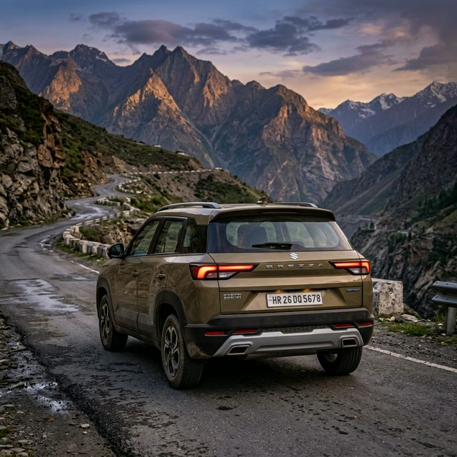

Hot and Techy SUV
The Maruti Suzuki Brezza has shed its conservative look for a more aggressive, high-tech persona. It combines Maruti's legendary after-sales peace of mind with modern amenities like a 360-degree camera and a HUD.

Detailed Specifications
| Feature | Details |
|---|---|
| Engine | 1.5L K-Series Dual Jet, Dual VVT |
| Smart Hybrid | Yes (High-Voltage SHVS) |
| Max power | 103 PS @ 6000 rpm |
| Mileage (Manual) | 20.15 kmpl |
| Torque | 137 Nm @ 4400 rpm |
| Gearbox | 5-MT / 6-AT with Paddle Shifters |
Frequently Asked Questions
Yes, the new Brezza was the first Maruti SUV to officially feature an electric sunroof.
The Brezza is built on the Global-C platform and has previously earned a solid 4-star Global NCAP safety rating.
The HUD is a transparent pop-up screen that shows speed and turn-by-turn navigation directly in the driver's line of sight.
No, Maruti Suzuki has discontinued Diesel engines; the Brezza is currently only available with Petrol and CNG options.
Thanks to the Smart Hybrid technology, you can expect a realistic city mileage of 14-15 kmpl in moderate traffic.
Yes, the 6-speed torque converter automatic variant comes with sporty steering-mounted paddle shifters.
Final Verdict
The Maruti Brezza remains the most sensible, fuss-free, and fuel-efficient choice in the sub-4 meter SUV category.